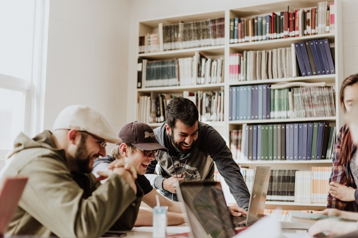
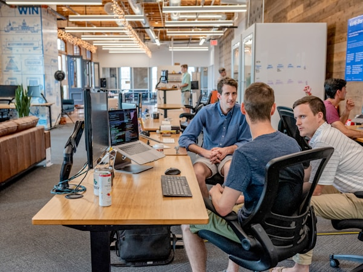
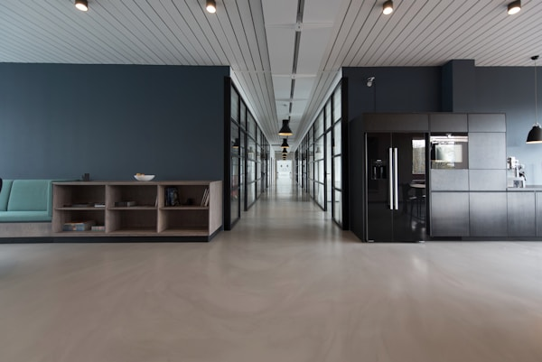

Home | My Story | A Day in My Life | Challenges | Goals
I know that I am still at the beginning of my journey. I have many things that I want to accomplish, and I know that achieving them will require time and determination.



Being a working student has taught me lessons that I cannot learn inside a classroom alone. I learned how important it is to be responsible, disciplined, patient, and hardworking.
I learned that success does not come overnight. Sometimes we have to take small steps every day before we can reach our biggest goals. The difficult days are also part of the process because they teach us how to become stronger.
Most importantly, I learned that I should not compare my journey with other people. Everyone has a different situation, a different starting point, and a different path toward success.
I do not know exactly what the future will look like, but I know that I want it to be better than today. I want to look back someday and be proud that I did not give up when life became difficult.
Every class I attend, every assignment I finish, every hour I work, and every challenge I overcome is another step toward the person I want to become.
Student. Worker. Dreamer. Future achiever.